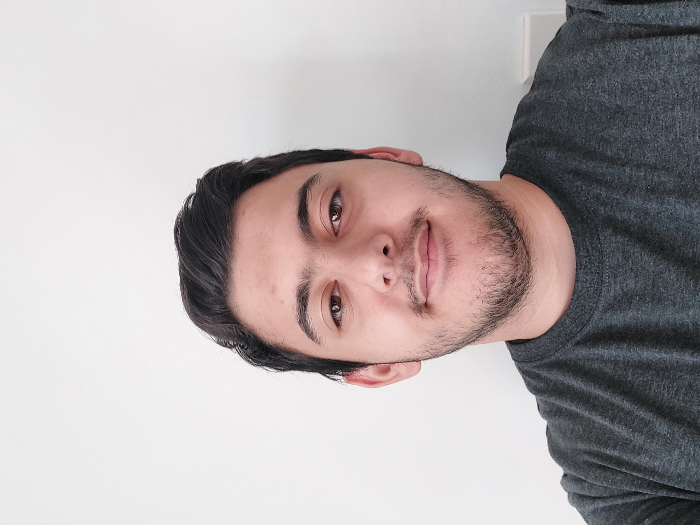

EPortfolio
Personal Information Interest in IT Ideal Job Personality Profile Personal InformationYusuf Akyavas
Personal Information
- StudentID: s3944584
- Student Email: s3944584@student.rmit.edu.au
Hello! My name is Yusuf Akyavas, and I am a current student in the Bachelor of Information Technology course at RMIT. I was born in Australia from two Turkish parents. I have two older brothers and we all speak both English and Turkish together, it varies from time to time. I went to a private school called Sirius College and spent my entire primary and secondary education there and graduated with a year 12 Certificate. I really enjoy playing video games and other tabletop games as well. The type of video games I play varies but I mostly enjoy playing cooperative games in which I can play with friends because I believe that experiences with other people are much more enjoyable than on your own. I also have two cats. Their names are Kestane which translates to “chestnut” in Turkish and Kimba which is from “Kimba The White Lion”(He is a white cat).
Interest in IT
My interest in IT started since a young age. My brothers are a lot older than me and so they had access to technology and devices which I did not. I would always enjoy watching them play a game and began wondering why it worked that way. As I got older I started to try and understand how changing something in the code changes the games or websites experience, but I was never fully invested. I only started getting really interested in the past few years as a result of the Covid-19 lockdown and I was spending more time on the computer.
This led to wanting to go to university with a bachelors or Information Technology. I chose to go to RMIT as it was the university that my oldest brother had gone to for his education in IT and he taught me about IT. It was also the easiest to go to as the other universities were very far away. From this IT course I hopefully will learn a broad range of knowledge which I can apply to my career and personal life and use the skills gained to help people in the field of IT. I would like to continually learn and grow and develop my IT skills for use in the future.
Ideal Job
The ideal Job that I would like to get into as of now is a connection to cyber security. This allows me to help people in this growing world of Information Technology.
Cyber Security Analyst
https://www.seek.com.au/job/56390340?type=standout#sol=0cf8bbfa2dc4833b792387f41e0f3e270fb879be
Description
The position of Cyber Defence Analyst works to protect against cyber threats by analysing the situations and determining the best course of action to protect systems from the risks. I was interested in this choice as my ideal job as I have an inner drive to help people and decided that in this growing online world I would help in a more technical manner.
Skills required
An understanding in IT systems and tools with at least 2 years’ experience working in the IT field in a cyber security setting. Good understanding of data security and the platforms which processes run on. Knowledge of cyber attacks and their stages and processes. Understanding the different cyber attacks, how they work and how to analyse them.
My Skills
I have a basic knowledge Python, JavaScript and Net Script programming languages, more in Python. I am learning SQL databases and modelling databases and have some knowledge in HTML and CSS.
How to Acquire Skills
I am going to complete the Bachelors of IT course and build on my knowledge and experience through both working and online courses and exercises to continuously test and hone my knowledge in the field of IT and specifically cyber security. I am planning to gain this knowledge through test and exercise in order to reinforce the information learnt throughout the course and to apply this knowledge to working in the cyber security industry.
At the end of this year I will hopefully:
- Have a good foundation and understanding of Python and JavaScript programming languages.
- Good understanding and knowledge in the use of HTML and CSS.
- Good understanding of SQL databases.
At the end of next year I will hopefully:
- Build on my existing knowledge and specialise further toward the cyber security industry.
At the end of next year I will hopefully:
- Work towards gaining experience by working at IT companies and specifically SOC’s to further my career and grant access to more opportunities in this field and specifically the role of Cyber Defence Analyst.
- Complete a masters course in IT to have greater knowledge and to assist me in my career in IT.
Personality Profile
1.Myers-Briggs Test:

After completing the Myers-Briggs personality test I was given the classification of Assertive Campaigner which has a personality code of ENFP-A
2.Learning-Styles Test:


After completing the Learning-Styles test I was given the classification of mostly Pragmatist. I continuously test and apply my knowledge to improve.
3.Big Five Personality Test:


The results from the Big Five Personality Test classify me as a person who is extroverted and able to work well with others.
What do the Results Mean to Me?
The results tell me that I am a sociable person who prefers social settings and in turn try to think of the group rather than the individual. I try to assert myself in a group and try to help in any way I can. I try to continuously grow and change, adapting to the environments which I am apart of and learn something new from experiences. I would be able to work well in a team environment and this would greatly assist me in the career of working in IT. From this team environment I would be able to continually improve as well as learn from my team mates as well.
What do the Results indcate about Behaviour in a Team?
The results indicate that my personality of being assertive, sociable and extroverted means that I will be able to get along with and work well together in a team. I will be able to clearly articulate my ideas and thoughts to my teammates and will be able to listen and provide opinions to theirs. I will strive to keep a positive outlook when working in a team and work to complete tasks with my co-workers and build connections not only in a professional manner but also on a personal level so that I may work better in the team.
How Should I Take these results into account when making a team?
When forming a team, I would have to think about the personalities of the people I am with and how we can work together. How their personality can work with mine and how I can grow with this team to work better. I will be thinking about how well I can express myself to my teammates in a way that we can all understand.
Project Idea
My project Idea is to create a social-deduction style video game primarily for pc development developed in the Unity Engine in a 2-D style. The game is set in a society which is advanced but split, between the “Dwellers” and the “Nomads”. The game runs with a minimum of 4 people to a maximum of 8, with the Dwellers being the large group and the Nomads being the smaller one. The objective of the game is to escape an exploding underwater base and survive with the Dwellers required to figure out who the Nomads are before it is too late.
Motivation
This game brings a new take on the original social deduction genre as it is harder for the larger group to win than in usual situations. The game will be interesting for players as it will provide more and different situations in which they have to work together in different ways in order to win the game.
According to the Steam statistics on the players of social deduction games on Steam, the average player count on at least 10-15 thousand per 24h people for the top 10 games on the charts.
Description
The name “Surface Problems” stems from the difficulty of working together as a team in tense situations and video games as it usually results in arguing and screaming. Someone’s patience and having problems during the course of the game.
LORE
200 years ago, a catastrophe struck the planet of “Cruth” in which the water level had risen and now covered 94% of the world. Of the societies that remain on land, they were given the name “Dwellers”. The people who set out to see where then referred to as “Nomads”. As time went by, the “Dwellers” developed an advanced society centred around technological advancements and the “Nomads” were left out on the sea, drifting among the waves, using whatever objects they find, thrown away by the “Dwellers”, floating along the ocean.
Throughout the years, the “Nomads”, pillage and steal from the “Dwellers”. Using the technology gained to further their survival. A group of “Nomads” find themselves waking up surrounded by a unfamiliar people. In a place deep underwater where sunlight cannot reach. Everyone begins looking around, wary of one another. They find this underwater base to be a testing facility on sabotaging “Nomad” raids. The “Nomads” find and take the equipment to build a resistance.
Suddenly words start appearing on the screen.
“SOME OF YOU ARE LIKE THE OTHERS, SOME OF YOU AREN'T”
“10:00 MINUTES, AND RUMBLING ENSUES"
"PLate."
THIS IS WHERE THE GAME BEGINS...
OBJECTIVE
The goal of the two groups is to survive the destruction of the underwater base and escape. Both sides have to reach the bottom level of the underwater base in under 15 minutes, completing objectives and deducing the Nomads on the way down. Players begin on the fourth level and Nomads have individual objectives which must be completed on each level. Everyone must reach the stairs on each floor after completing objectives and gaining access to it.
On each level, all objectives must be completed and there is an individual timer on each level as well, corresponding to that floor being lost to nearby explosions. At the escape vehicle, the players must vote who to leave behind depending on the amount of Nomads there are in the game.
Ways of Victory:
- If Dwellers escape on their own, “Dwellers” win.
- If Nomads escape with the Dwellers, “Nomads” win.
- If neither escape before the time runs out, “PLate.” wins.
- If someone is left on a level, “PLate.” wins
The tasks that are to be carried out by the players are (In Order):
- Repairing Oxygen system (Changes from 3 to 4 depending on the amount of players)
- Repairing lights
- Unlocking doors(unlocking doors to the stairs and to it. About 3 or 4 a level)
The tasks that have a timed trial are:
- Repairing Oxygen (1:00 Minute)
The tasks required by the Nomads are:
- Stealing a piece of equipment relevant to the facility (It will be highlighted to the Nomads)
- Updating the software on the sabotaging equipment by connecting to a console( many around the map)
Individual tasks are:
- Pick up an oxygen canister from a level(many on one level and are scattered around the map)
Each task needs to be done with at least 2 people and a maximum of 3 people.
OTHER
The Player can only see a small radius around the character and the way the character is facing when the light is off. When the light is on they can see a larger radius and see behind themselves. When in darkness the outlines of the walls are seen.
This game will be an online game with public and private rooms. There will be an addition of voice chat and text chat features.
There will be a set of 8 different characters to choose from which will have different cosmetics and no one can choose the same one. The game will be made in a pixelated style and be in a top-down view looking at the character.
Tools and Technology
To use the Unity Engine in order to create a game I need a graphics card with DX10 capabilities. I need to have a computer which is above Windows 7 OS with 8GB of RAM. From these requirements I will be able to download and use the unity engine and start development on the game. Getting a better computer would make the process easier and that would require about $1000-$2000 to get a good pc which would work well for what I need.
Every unity project is saved locally, so I would require constant backups and connections in case of data loss.
To acquire the software and assets to make the game the best it can be it would require a lot of money, this is based off of the assets store of the Unity Engine.
Based on the pricing for art styles and animations I would require at least $1000 to be able to use the assets which I believe would be able to help the game in terms of mechanics and features.
Required Skills
As “Surface Problems” is a game that will be developed using the Unity Engine, I will require to learn C# programming language in order to code this game. An understanding of game design and development.
An understanding of 2D animation which will be learnt through various online means. This specialises on Sprite animations which are required for the 2D field of animation and gaming.
These skills will be learnt through an online course in C# programming language and game design on unity through gamedev.tv online course. These skills can also be learnt through Unity Learn.
Outcome
The outcome of the game being created is a platform for friends and strangers to have fun playing online. The game will be stored on the Unity development page where people can access it and play it. After the game is developed and accessed by people I will stay In contact with the users to be able to debug and update the game from the reviews given. These updates will depend on how many users will provide feedback and how many of these feedbacks are similar.
Overall, if the game was a success I will be fulfilled that I was able to create something containing my originality and share it for people to view and use.